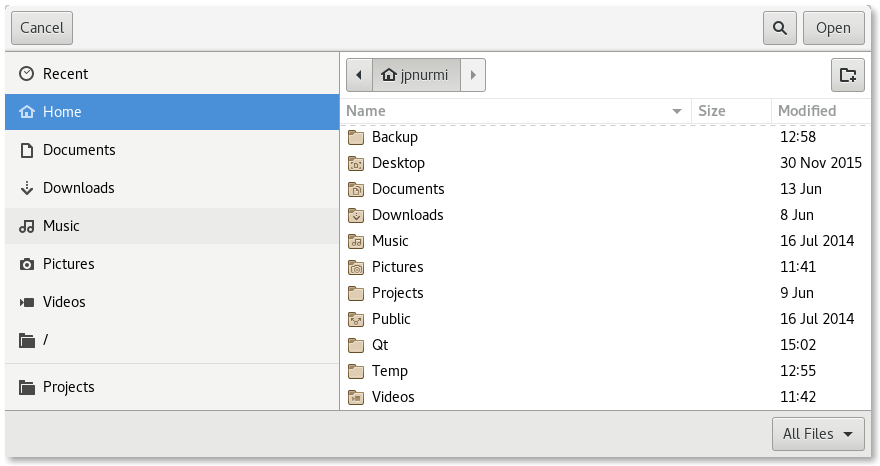

FolderDialog QML Type
A native folder dialog. More...
| Import Statement: | import Qt.labs.platform |
| Inherits: |
Properties
- acceptLabel : string
- currentFolder : url
- folder : url
- options : flags
- rejectLabel : string
Detailed Description
The FolderDialog type provides a QML API for native platform folder dialogs.

To show a folder dialog, construct an instance of FolderDialog, set the desired properties, and call open(). The currentFolder property can be used to determine the currently selected folder in the dialog. The folder property is updated only after the final selection has been made by accepting the dialog.
MenuItem {
text: "Open..."
onTriggered: folderDialog.open()
}
FolderDialog {
id: folderDialog
currentFolder: viewer.folder
folder: StandardPaths.standardLocations(StandardPaths.PicturesLocation)[0]
}
MyViewer {
id: viewer
folder: folderDialog.folder
}
Availability
A native platform folder dialog is currently available on the following platforms:
- Android
- iOS
- Linux (when running with the GTK+ platform theme)
- macOS
- Windows
The Qt Labs Platform module uses Qt Widgets as a fallback on platforms that do not have a native implementation available. Therefore, applications that use types from the Qt Labs Platform module should link to QtWidgets and use QApplication instead of QGuiApplication.
To link against the QtWidgets library, add the following to your qmake project file:
QT += widgets
Create an instance of QApplication in main():
#include <QApplication> #include <QQmlApplicationEngine> int main(int argc, char *argv[]) { QApplication app(argc, argv); QQmlApplicationEngine engine; engine.load(QUrl(QStringLiteral("qrc:/main.qml"))); return app.exec(); }
Note: Types in Qt.labs modules are not guaranteed to remain compatible in future versions.
See also FileDialog and StandardPaths.
Property Documentation
acceptLabel : string |
This property holds the label text shown on the button that accepts the dialog.
When set to an empty string, the default label of the underlying platform is used. The default label is typically Open.
The default value is an empty string.
See also rejectLabel.
currentFolder : url |
folder : url |
This property holds the final accepted folder.
Unlike the currentFolder property, the folder property is not updated while the user is selecting folders in the dialog, but only after the final selection has been made. That is, when the user has clicked OK to accept a folder. Alternatively, the accepted() signal can be handled to get the final selection.
See also currentFolder and accepted().
options : flags |
This property holds the various options that affect the look and feel of the dialog.
By default, all options are disabled.
Options should be set before showing the dialog. Setting them while the dialog is visible is not guaranteed to have an immediate effect on the dialog (depending on the option and on the platform).
Available options:
| Constant | Description |
|---|---|
FolderDialog.ShowDirsOnly | Only show directories in the folder dialog. By default both folders and directories are shown. |
FolderDialog.DontResolveSymlinks | Don't resolve symlinks in the folder dialog. By default symlinks are resolved. |
FolderDialog.ReadOnly | Indicates that the dialog doesn't allow creating directories. |
rejectLabel : string |
This property holds the label text shown on the button that rejects the dialog.
When set to an empty string, the default label of the underlying platform is used. The default label is typically Cancel.
The default value is an empty string.
See also acceptLabel.